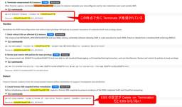
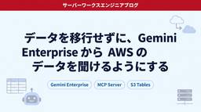
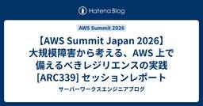
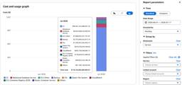
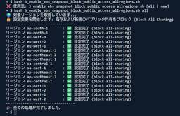
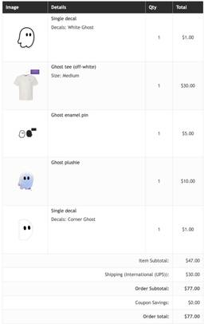

サーバーワークスエンジニアブログ
https://blog.serverworks.co.jp/
クラウド専業インテグレーター・サーバーワークスの中の人があらゆる技術についてお届けします。
フィード

AWS Skill Builder の Microcredential「AWS Agentic AI Demonstrated」を受験してみた
サーバーワークスエンジニアブログ
今月誕生日の人、おめでとうございます🎉 エデュケーショナルサービス課の森純子です。 「AWS 認定資格に興味はあるけど、勉強時間の確保が大変…」「もっと手軽にスキルを証明する方法はないの？」そんなお悩み、ありませんか？ 実は AWS Skill Builder には、認定資格とは別に Microcredential（マイクロクレデンシャル） という実技試験があります。2026年4月から無料で受験できるようになりました。 その中の1つ、Agentic AI 分野の Microcredential「AWS Agentic AI Demonstrated」を6月に受験して合格しました。少し時間が経っ…
1日前
【詳細解説】AWS Lambdaのセルフマネージド型コードストレージを使ってみた
サーバーワークスエンジニアブログ
こんにちは！ES課、濱岡です。 Lambda関数やレイヤーを作成・更新すると、デプロイパッケージは自動でLambda管理のストレージにコピーされます。このコピー分がコードストレージの上限にカウントされるため、レイヤーを多用する環境などでは上限に引っかかることがありました。今回、自分のAmazon S3バケットのコードをコピーせず直接参照できるセルフマネージド型のコードストレージが発表されたので、内容を紹介します。 今回のアップデートに関する公式発表は以下です。 aws.amazon.com AWS Lambdaセルフマネージド型コードストレージとは コードストレージの上限を整理する 主な機能/…
2日前

Amazon GuardDuty Investigation (Preview) を実際に調査で使ってみたその使用感
サーバーワークスエンジニアブログ
セキュリティサービス部 佐竹です。本ブログでは、プレビュー中の Amazon GuardDuty Investigation について、実際に攻撃を仕掛けて検証した結果をもとに、画面キャプチャを掲載しながら詳細にご紹介します。結論としては、冒頭にも書いた通り「やりたいことはわかる」機能に仕上がってます。しかし、課題も見つかりました。
2日前
仕様駆動開発（Spec-Driven Development）は実際の開発フローでどう使う？一連の流れで整理してみた 1
1
サーバーワークスエンジニアブログ
こんにちは！ES課、濱岡です。 ものすごく暑くなりましたね。 体調には、みなさまお気をつけくださいね。 最近、仕様駆動開発（Spec-Driven Development）について学ぶ機会があり、概念を理解するだけでなく、GitHub Spec KitとClaude Codeを使って実際に小さな機能を作ってみました。 「仕様駆動開発とは何か」はすでにいくつか記事が出ているので、この記事では実際の開発の流れ（要件定義→設計書作成→設計書レビュー→実装→実装レビュー→テスト→設計書の最終化）に沿って、各工程で仕様駆動開発をどう組み込むのかをまとめます。 要件定義 設計書作成 Constitutio…
2日前
BCM Dashboards の Cost Efficiency ウィジェットで「コスト効率スコア」を一目で確認してみた
サーバーワークスエンジニアブログ
今月誕生日の人、おめでとうございます🎉 エデュケーショナルサービス課の森純子です。 「Cost Optimization Hub の推奨事項は見ているけど、スコアの推移を他のコスト情報と一緒に確認したい…」そんなお悩み、ありませんか？ 2026年7月16日のアップデートで、AWS Billing and Cost Management（BCM）Dashboards に Cost Efficiency ウィジェットが追加されました🎉 Track cost efficiency trends directly in Billing and Cost Management Dashboards wi…
2日前
サーバーワークスエンジニアブログ 2026年上半期まとめ
サーバーワークスエンジニアブログ
サーバーワークスエンジニアブログ 2026年上半期まとめ 2026年も折り返しということで、サーバーワークスエンジニアブログの上半期（2026年1月1日〜6月30日）に公開された全記事を集計し、どんな傾向・ジャンルが多かったのかを分析してみました。 上半期の投稿数サマリー 上半期の総記事数は448本でした。ほぼ毎日記事が公開されており、平均すると1日あたり約2.5本のペースです。 圧倒的に多かったのは「生成AI・AIエージェント」 タイトルとカテゴリをもとに記事をジャンル分けしたところ、最大勢力は生成AI・AIエージェント関連で、全体の約半数（226本・50%）を占めました。 ※ タイトル・カ…
3日前
【Amazon Connect】2018年の日本上陸から8年。ついにAI音声が進化！待望の新機能「エージェントボイス」徹底解説
サーバーワークスエンジニアブログ
みなさん、こんにちは！ 株式会社サーバーワークスで Amazon Connect の専任担当をしている丸山です。 日々、Amazon Connect のプリセールスや導入支援、運用サポートを行う中で、情シスやカスタマーサポートの現場のみなさまからこんなお悩みをよく伺います。 「IVR（自動音声応答）の音声がいかにも機械的で、お客様に冷たい印象を与えてしまう…」 「もっと自然で聞き取りやすく、お客様が安心して話せる声で案内させたい！」 電話の向こうの「ロボットっぽさ」、運用しているみなさまなら一度は気になったことがありますよね？ 実は2026年7月、AWSから非常にエキサイティングなアップデート…
3日前

AgentCore RuntimeでClaude Codeを実行しターミナル接続で利用する
サーバーワークスエンジニアブログ
こんにちは、久保(賢)です。 2026年6月5日、Amazon Bedrock AgentCore Runtimeに新しいAPI「InvokeAgentRuntimeCommandShell」が追加され、実行中のRuntimeセッションに対してPTYを利用した永続的なターミナルをWebSocket経由で直接開くことができるようになっています。 発表(What's New) 公式ドキュメント: Interactive Shells (Terminals) 本記事では、この機能を利用してClaude CodeをインストールしたコンテナをAgentCore Runtimeにデプロイし、ローカルのター…
3日前
朝ごはんを作りながら PR が生まれた — Kiro for iOS で「ながら開発」をしてみた
サーバーワークスエンジニアブログ
はじめに この記事で学べること 前提知識・条件 Kiro for iOS / Kiro for Web とは？ やってみた 準備: GitHub と接続する Step 1: Web 版でブランチを指定して開発を依頼する Step 2: iOS アプリで空き時間に Spec モードで開発する Step 3: 待っていたら PR ができる Step 4: GitHub Copilot でレビューしてもらう Step 5: 動作確認と Issue のループ まとめ はじめに こんにちは、アプリケーションサービス本部ディベロップメントサービス 1 課の森山です。３連休ですね！ 今回は2026 年 6 …
3日前

Claude Code のネイティブ利用と Amazon Bedrock 利用は何が違う？組織導入の視点で整理
サーバーワークスエンジニアブログ
Claude Code のネイティブ利用と Amazon Bedrock 利用は何が違う？組織導入の視点で整理 Claude Code を組織で利用しようとすると、検討事項が意外と多くあります。データを国内に置けるのか、請求書払いはできるのか、セキュリティ審査は通るのか。そしてこれらの答えは、Claude Code がどの経路で Claude に接続するかで大きく変わります。 Claude Code には Anthropic に直接つなぐネイティブ利用と、Amazon Bedrock を経由する利用があります。この記事では組織での利用を前提に、両者のメリット・デメリットを「支払いと調達」「デー…
4日前
CloudFront の VPC Origins を利用している環境で 5xx エラーが発生した障害について考えてみた 1
サーバーワークスエンジニアブログ
こんにちは、テクニカルサポート課の設楽です。2026年7月16日に発生した CloudFront の VPC Origins 障害について、何が起きたのか、原因は何だったのか、そして今後どう備えるべきかを考えてみました。 はじめに 2026年7月16日 CloudFront の VPC Origins を利用している環境で 5xx エラーが増加する障害が発生しました。 この記事では、VPC Origins の仕組みを前提知識として整理したうえで、今回の障害の原因と影響範囲を記載し、同様の障害に備えるための設計上のポイントを紹介します。 VPC Origins とは VPC Origins は …
7日前
AWS Support からの調査目的のアクセスでデータへのアクセス許可を定義できるようになりました 1
サーバーワークスエンジニアブログ
AWS Support authorization（サポート認可）は、サポートケース解決時にデータを含む可能性のあるリソースへの AWS Support からのアクセスを、KMS 署名付きの support permit で制御し CloudTrail で監査可能にする機能です。Proactive / Reactive 両方の認可フローや、画面構成、API リファレンスについて解説します。
7日前

データを移行せずに、Gemini Enterprise から AWS のデータを聞けるようにする（後編：ノーコードでの Custom Agent 構築と、ADK による認証付きクロスクラウド連携）
サーバーワークスエンジニアブログ
こんにちは。クロスインダストリー第1本部 松田です。 前編 では、アーキテクチャ選定の経緯と AWS 側の構築（Amazon S3 Tables・AWS Lambda MCP サーバー・Amazon API Gateway・VPC エンドポイント）をご紹介しました。 後編の本記事では、Google Cloud（以下 GC）側の設定から Gemini Agent Platform Studio でのノーコード Custom Agent の作成、そして自然言語での問い合わせまでを追っていきます。エージェントをノーコードで作成しようとしたものの、認証部分がまだ非対応だったため、コードベースで実装した…
7日前
データを移行せずに、Gemini Enterprise から AWS のデータを聞けるようにする（前編：構成の選定と AWS 側の構築）
サーバーワークスエンジニアブログ
こんにちは。クロスインダストリー第1本部 松田です。 Gemini Enterprise を全社導入されているお客様と、「Gemini をユーザーインタフェースとして AWS 上のデータを AI 活用できないか？」というテーマでディスカッションをさせていただいたことがありました。「AWS のデータを Google 側からも使いたいけど、わざわざデータをコピーしたくない」というのが出発点です。 このやりとりをきっかけに、最小の労力でどのようなアーキテクチャで実現できるかを検証しました。今回はその検証レポートとして、Gemini Enterprise の AI エージェントプラットフォームを使い、…
7日前

【AWS Summit Japan 2026】大規模障害から考える、AWS 上で備えるべきレジリエンスの実践 [ARC339] セッションレポート
サーバーワークスエンジニアブログ
セッション構成について 第1章 障害が起きた時、AWS は何をしているのか？ フェーズ1：検出と軽減策 フェーズ2：振り返り（COE と Five Whys） フェーズ3：学習とスケーリング 第2章 Availability Axioms — 障害から生まれた4つの原則 ① リージョンの分離 ② AZ 障害への自動対応 ③ 厳密なテスト ④ 過負荷からの保護 第3章 Fidelity の実践 — 9分で2,000アプリを切り替えた話 AWS 運用・構築に活かせそうな点 まとめ 本記事について（出典・引用） こんにちは！クロスインダストリー第1本部クラウドコンサルティング2課の清水です。 今回は…
7日前

【復旧済】AWS Cost Explorer で桁違いの高額コストが表示される事象が発生していました
サーバーワークスエンジニアブログ
セキュリティサービス部 佐竹です。2026年7月17日 日本時間 11:38 AM 頃より、AWS のコスト管理関連サービスにおいて、実際のご利用額と大幅に乖離した金額が表示される事象を確認しましたので、注意喚起のため急遽ブログにしていました。2026年7月18日 22:57 に完全復旧が告知されており、現在は復旧済です。
7日前

AWS Security Hub CSPM「EC2.182」の対応を Script で CloudShell から一括実行する
サーバーワークスエンジニアブログ
セキュリティサービス部 佐竹です。今回は AWS Security Hub CSPM「EC2.182」対応のために、EBS スナップショットのパブリックアクセスブロック設定を CloudShell から一括で確認＆変更する Script をご紹介します。EBS スナップショットのパブリック共有ブロックはデフォルトで無効になっている設定のため、意図せず放置されているケースも少なくありません。
7日前
SageMaker JumpStart で OpenAI の PII 検出モデル「privacy-filter」をデプロイしてみた
サーバーワークスエンジニアブログ
今月誕生日の人、おめでとうございます🎉 エデュケーショナルサービス課の森純子です。 「生成 AI に社内データを食わせたいけど、個人情報が混ざっていないか心配…」そんなお悩み、ありませんか？ 2026年7月13日のアップデートで、OpenAI の PII 検出・マスキングモデル「privacy-filter」が Amazon SageMaker JumpStart で利用可能 になりました🎉 OpenAI privacy-filter for PII detection and masking is now available in Amazon SageMaker JumpStart（202…
8日前

【お誕生日おめでとう】Kiro公式通販サイトを使って公式グッズを買ってみた
サーバーワークスエンジニアブログ
はじめに こんにちはクロスインダストリー第2部 カスタマーサクセス課の大野です。 今更ですが、AWS Summit Japanはみなさん楽しめたでしょうか？ フィジカルAIの未来や、AI関連での簡単に作れるもの〜どうなってるのこれ!?と思える作品まで様々なものが見れて楽しい二日間を過ごすことができました。 そんなSummitに参加した皆さまは、思ったのではないでしょうか。 AWSスタッフのKiroTシャツ欲しい。 僕もその一人です。 というわけでTシャツを入手してきました。 Kiro公式通販サイト 6月の中旬にKiroの公式通販サイトがリリースされています。 aws.amazon.com こち…
8日前

【AWS Summit Japan 2026】Amazon DynamoDB アドバンスドデータモデリング セッションレポート
サーバーワークスエンジニアブログ
はじめに このセッションで学べること 前提知識・条件 セッション内容 セッション概要 Amazon DynamoDB の特性 フルマネージド分散 NoSQL データベース 従量課金モデル パーティショニングと一貫した性能 データモデリングの目標とプロセス Keep It Simple とデータモデリングの大原則 データモデリングプロセス セカンダリインデックスの活用 マルチ属性複合キーとは 従来の複合キー設計パターンと課題 マルチ属性複合キーの特性と注意点 セカンダリインデックスのコスト管理 不要なインデックスを減らす スパースインデックスを活用する 必要な属性だけをプロジェクションする Dy…
8日前
AWS WAFのレートベースルールはどう動く？ダッシュボードでブロックの動作を確認してみた
サーバーワークスエンジニアブログ
AWS WAFのRate-based ruleをCount モードとBlock モードで検証。EC2+ALB環境でheyを使ったリクエストの結果をダッシュボードで確認していきます。
8日前
Security Hub の Network Scanning で「本当に外から届くのか」を確認してみた
サーバーワークスエンジニアブログ
今月誕生日の人、おめでとうございます🎉 エデュケーショナルサービス課の森純子です。 「セキュリティグループは閉じたはずなのに、本当に外から到達できないか不安…」そんなお悩み、ありませんか？ 2026年7月8日のアップデートで、AWS Security Hub に Network Scanning 機能 がリリースされました🎉 AWS Security Hub now offers Network Scanning to identify publicly reachable resources（2026年7月8日） 従来の Security Hub は、セキュリティグループやルートテーブルの「…
9日前
「AIに任せればいい」で終わらせなかった話
サーバーワークスエンジニアブログ
こんにちは！ES課、濱岡です。普段は中途入社の方のトレーナーを担当しています。 生成AI（LLM）の広がりとともに、「現場の業務効率化にAIを活用しよう」という動きがどこの組織でも高まっていますね。先日、上司から「営業サポートのメンバーの業務負荷を軽減するために、AIをうまく活用できないか」という発案があり、新しい取り組みがスタートしました。 社内システムを直接管理する部門ではないため、まずは現場の皆さんにClaudeなどのLLMに触れてもらい、一緒に活用方法を探っていくアプローチをとりました。 実際の業務に当てはめながら伴走した結果、大きな気づきがありました。「AIの得意分野を活かしていくこ…
9日前
WSL2 + Claude Code が重い？犯人はAIじゃなかった ── VmmemWSLのメモリ肥大を95%→77%まで下げた話
サーバーワークスエンジニアブログ
はじめに こんにちは。クロスインダストリー2部統合運用課、有川です。 部課名が長すぎて、クレジットカードなど会社名部課名を申請する必要のある時、入力フォームの文字数制限に引っかかる現象に困ってます。 一応略称はあるのですが（XI2部統運課）社内でしか絶対通じない。 ワンチャン社内ですら通じないかも。 この記事の概要 さて。今回の記事概要です。 お忙しい方はここだけ読んで頂ければ把握出来るかと思います。 VSCode+WSL2上でClaude Codeを使い始めてからPCが重くなった。メモリ使用率が常時90%~98%前後 AIにタスクを投げつつ、自分はBacklog返答などの文面を書く、全く別の…
10日前
外部Webhook連携で実現するAWSクロスアカウントJITアクセス管理（申請・許可・却下）
サーバーワークスエンジニアブログ
こんにちは！イーゴリです。ユーザーがJITノードへの接続を試みると、アクセス理由の入力が求められ、承認ポリシーに基づいて自動承認されるか、承認者へ通知が送られます。承認者への通知は、メール、またはSlackやMicrosoft Teamsと連携するAmazon Q Developer in chat applications経由で行うことができます。 aws.amazon.com 一方で、JITノードアクセスは通常AWS Management ConsoleやCLIから利用しますが、実際にはssm:StartAccessRequestやssm:SendAutomationSignalといったA…
10日前
Claude Code × Git ワークツリーで複数タスクを安全に並列処理する方法
サーバーワークスエンジニアブログ
Claude Code の --worktree フラグと Git ワークツリーを組み合わせ、複数タスクをファイル衝突なく並列処理する方法を解説。起動方法からサブエージェントとのコンテキスト分離、クリーンアップの注意点まで実践的に紹介します。
10日前
GPT-5.6 vs Claude Fable 5 どこが強くてどこが弱い？ベンチマーク比較
サーバーワークスエンジニアブログ
はじめに サーバーワークスの池田です。 2026 年 7 月 9 日、OpenAI が GPT-5.6 ファミリー（Sol・Terra・Luna）の一般提供を開始しました。6 月 26 日の限定プレビュー（米政府の要請で当初は信頼パートナー約 20 社に限定）から約 2 週間での正式リリースです。 本記事では、OpenAI 公式発表ページに掲載された比較表を一次ソースとして、GPT-5.6 と Anthropic の Claude（Fable 5 / Mythos 5 / Opus 4.8）を直接比較できる 14 個のベンチマークを整理し、用途別の使い分けの軸を提示します。 この記事で分かるこ…
10日前
マネジメントコンソールから作るRAG 〜Amazon Bedrock Managed Knowledge Base × AgentCore Gateway〜
サーバーワークスエンジニアブログ
はじめに 背景 今回の全体構成 手順 1. S3にファイルをアップロードする 2. Bedrock Managed Knowledge Base を作成する 3. AgentCore Gatewayを作成する 4. Gateway呼び出し用のIAMユーザーを作成する 5. ローカルのAWS CLIで認証情報を取得する 6. ローカルのClaude CodeのMCP設定を追加する 使ってみた所感 おわりに はじめに こんにちは、アプリケーションサービス本部ディベロップメントサービス3課の北出です。 2026年6月に Amazon Bedrock Managed Knowledge Base が一…
11日前
Claude Code の Skills と Commands の違いを整理して、効率的に使い分ける
サーバーワークスエンジニアブログ
Claude Code の Commands と Skills は現在統合された仕組みで、どちらも同じ / コマンドとして動作します。両者の実質的な違いは付属ファイルを持てるかどうかの1点。比較表と判断基準で使い分け方を整理します。
11日前
Claude Code更新 サブエージェント既定バックグラウンド化・誤承認防止【6/29〜7/12】
サーバーワークスエンジニアブログ
はじめに サーバーワークスの池田です。 今回は6/29〜7/12の2週間分をまとめてお届けします。Claude Codeはv2.1.196からv2.1.207まで12バージョンがリリースされました。 サブエージェントが既定でバックグラウンド実行されるようになったことに加え、バックグラウンドタスクの通知まわりで安全性を高める修正が入りました。Workflowツールの規模を制御する設定も追加されています。 この記事で分かること サブエージェントが既定でバックグラウンド実行されるようになった変更点と、同期実行に戻す方法 バックグラウンドタスクの通知が「捏造された承認」の実行を防ぐようになった仕組み …
11日前